I am zzhc
你好，我是正在缓冲。
我对设计和开发充满热情。
我热衷我所爱的一切。
赛题以二手车市场为背景，要求选手预测二手汽车的交易价格，这是一个典型的回归问题。
任务流程：
（一）：数据预处理
（二）：分析数据指标
（三）：观察数据分布特性
（四）：建立预测模型
# 导入包
from sklearn.model_selection import train_test_split,cross_val_predict
from sklearn.linear_model import LinearRegression,Lasso
from sklearn import metrics
import pandas as pd
import matplotlib.pyplot as plt
import seaborn as sns
import numpy as np
from scipy.stats import norm
from scipy import stats
import csv
#忽律警告
import warnings
warnings.filterwarnings('ignore')# 读数据
df_train = pd.read_csv('./data/train.csv',sep=' ')
df_test = pd.read_csv('./data/test.csv',sep=' ')
#存ID
train_ID = df_train['SaleID']
test_ID = df_test['SaleID']
#去掉ID
df_train.drop("SaleID", axis = 1, inplace = True)
df_test.drop("SaleID", axis = 1, inplace = True)
print("\n数据维度 : {} ".format(df_train.shape))
print("数据维度 : {} ".format(df_test.shape))
数据维度 : (150000, 30)
数据维度 : (50000, 29)
特征：
# 显示数据
df_train.head(3).append(df_train.tail(3))| name | regDate | model | brand | bodyType | fuelType | gearbox | power | kilometer | notRepairedDamage | ... | v_5 | v_6 | v_7 | v_8 | v_9 | v_10 | v_11 | v_12 | v_13 | v_14 | |
|---|---|---|---|---|---|---|---|---|---|---|---|---|---|---|---|---|---|---|---|---|---|
| 0 | 736 | 20040402 | 30.0 | 6 | 1.0 | 0.0 | 0.0 | 60 | 12.5 | 0.0 | ... | 0.235676 | 0.101988 | 0.129549 | 0.022816 | 0.097462 | -2.881803 | 2.804097 | -2.420821 | 0.795292 | 0.914762 |
| 1 | 2262 | 20030301 | 40.0 | 1 | 2.0 | 0.0 | 0.0 | 0 | 15.0 | - | ... | 0.264777 | 0.121004 | 0.135731 | 0.026597 | 0.020582 | -4.900482 | 2.096338 | -1.030483 | -1.722674 | 0.245522 |
| 2 | 14874 | 20040403 | 115.0 | 15 | 1.0 | 0.0 | 0.0 | 163 | 12.5 | 0.0 | ... | 0.251410 | 0.114912 | 0.165147 | 0.062173 | 0.027075 | -4.846749 | 1.803559 | 1.565330 | -0.832687 | -0.229963 |
| 149997 | 147587 | 20101003 | 60.0 | 11 | 1.0 | 1.0 | 0.0 | 90 | 6.0 | 0.0 | ... | 0.233353 | 0.000705 | 0.118872 | 0.100118 | 0.097914 | 2.439812 | -1.630677 | 2.290197 | 1.891922 | 0.414931 |
| 149998 | 45907 | 20060312 | 34.0 | 10 | 3.0 | 1.0 | 0.0 | 156 | 15.0 | 0.0 | ... | 0.256369 | 0.000252 | 0.081479 | 0.083558 | 0.081498 | 2.075380 | -2.633719 | 1.414937 | 0.431981 | -1.659014 |
| 149999 | 177672 | 19990204 | 19.0 | 28 | 6.0 | 0.0 | 1.0 | 193 | 12.5 | 0.0 | ... | 0.284475 | 0.000000 | 0.040072 | 0.062543 | 0.025819 | 1.978453 | -3.179913 | 0.031724 | -1.483350 | -0.342674 |
6 rows × 30 columns
一.数据预处理：
#统计缺失值
total = df_train.isnull().sum().sort_values(ascending=False)
percent = (df_train.isnull().sum()/df_train.isnull().count()).sort_values(ascending=False)
missing_data = pd.concat([total, percent], axis=1, keys=['Total', 'Percent'])
missing_data.head(10)| Total | Percent | |
|---|---|---|
| fuelType | 8680 | 0.057867 |
| gearbox | 5981 | 0.039873 |
| bodyType | 4506 | 0.030040 |
| model | 1 | 0.000007 |
| v_14 | 0 | 0.000000 |
| v_13 | 0 | 0.000000 |
| regDate | 0 | 0.000000 |
| brand | 0 | 0.000000 |
| power | 0 | 0.000000 |
| kilometer | 0 | 0.000000 |
total = df_test.isnull().sum().sort_values(ascending=False)
percent = (df_test.isnull().sum()/df_test.isnull().count()).sort_values(ascending=False)
missing_data = pd.concat([total, percent], axis=1, keys=['Total', 'Percent'])
missing_data.head(10)| Total | Percent | |
|---|---|---|
| fuelType | 2924 | 0.05848 |
| gearbox | 1968 | 0.03936 |
| bodyType | 1504 | 0.03008 |
| v_14 | 0 | 0.00000 |
| creatDate | 0 | 0.00000 |
| regDate | 0 | 0.00000 |
| model | 0 | 0.00000 |
| brand | 0 | 0.00000 |
| power | 0 | 0.00000 |
| kilometer | 0 | 0.00000 |
#缺失值处理（众数具有普遍性，选择众数填充）
df_train["fuelType"] = df_train["fuelType"].fillna(stats.mode(df_train["fuelType"])[0][0])
df_test["fuelType"] = df_test["fuelType"].fillna(stats.mode(df_train["fuelType"])[0][0])
df_train["gearbox"] = df_train["gearbox"].fillna(stats.mode(df_train["gearbox"])[0][0])
df_test["gearbox"] = df_test["gearbox"].fillna(stats.mode(df_train["gearbox"])[0][0])
df_train["bodyType"] = df_train["bodyType"].fillna(stats.mode(df_train["bodyType"])[0][0])
df_test["bodyType"] = df_test["bodyType"].fillna(stats.mode(df_train["bodyType"])[0][0])
df_train["model"] = df_train["model"].fillna(stats.mode(df_train["model"])[0][0])
df_train['notRepairedDamage'].replace('-',1,inplace=True)
df_test['notRepairedDamage'].replace('-',1,inplace=True)#删除无意义特征
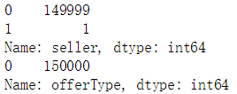
del df_train["seller"]
del df_train["offerType"]
del df_test["seller"]
del df_test["offerType"]二.分析数据指标:
#correlation matrix
corrmat = df_train.corr()
f, ax = plt.subplots(figsize=(12, 9))
sns.heatmap(corrmat, square=True,cmap='YlGnBu');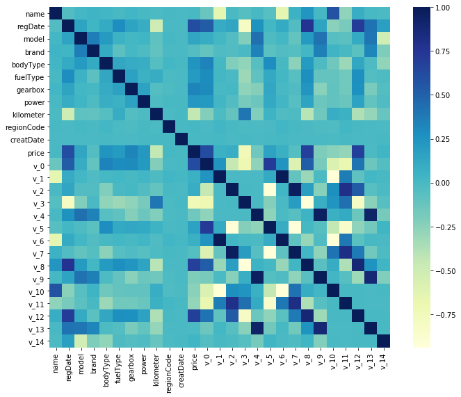
k = 12
cols = corrmat.nlargest(k, 'price')['price'].index
cm = np.corrcoef(df_train[cols].values.T)
sns.set(font_scale=1.25)
hm = sns.heatmap(cm, cbar=True, annot=True, square=True, fmt='.2f', annot_kws={'size': 10}, yticklabels=cols.values, xticklabels=cols.values,cmap='YlGnBu')
plt.show()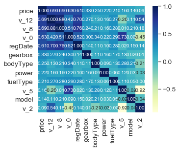
# sns.set()
# cols = ['price', 'v_12', 'v_8', 'v_0', 'regDate', 'power', 'v_5']
# sns.pairplot(df_train[cols], size = 2.5)
# plt.show();三.观察数据分布特性:
sns.distplot(df_train['price']);
df_train['price'].describe()count 150000.000000
mean 5923.327333
std 7501.998477
min 11.000000
25% 1300.000000
50% 3250.000000
75% 7700.000000
max 99999.000000
Name: price, dtype: float64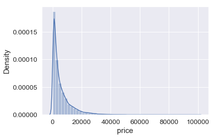
查看它的偏度值（不对称性值），越不对称，越不服从正态分布
#skewness and kurtosis
print("Skewness: %f" % df_train['price'].skew())
print("Kurtosis: %f" % df_train['price'].kurt())Skewness: 3.346487
Kurtosis: 18.995183
sns.distplot(df_train['price'] , fit=norm)
(mu, sigma) = norm.fit(df_train['price'])
plt.legend(['Normal dist. ($\mu=$ {:.2f} and $\sigma=$ {:.2f} )'.format(mu, sigma)],
loc='best')
plt.ylabel('Frequency')
plt.title('price distribution')
#分位数图
fig = plt.figure()
res = stats.probplot(df_train['price'], plot=plt)
plt.show()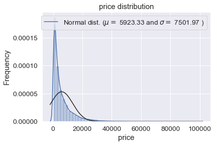
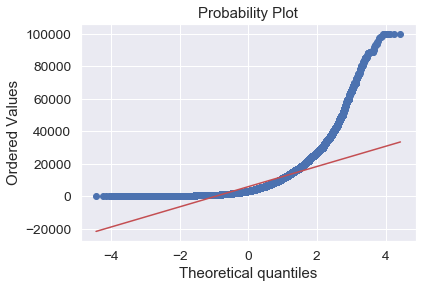
#对数变换log(1+x)
df_train["price"] = np.log1p(df_train["price"])
#看看新的分布
sns.distplot(df_train['price'] , fit=norm)
# 参数
(mu, sigma) = norm.fit(df_train['price'])
print( '\n μ = {:.2f} and σ = {:.2f}\n'.format(mu, sigma))
#画图
plt.legend(['Normal dist. ($\mu=$ {:.2f} and $\sigma=$ {:.2f} )'.format(mu, sigma)],
loc='best')
plt.ylabel('Frequency')
plt.title('price distribution')
#分位数图
fig = plt.figure()
res = stats.probplot(df_train['price'], plot=plt)
plt.show()
μ = 8.04 and σ = 1.22
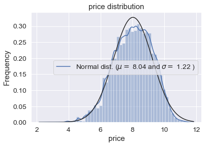
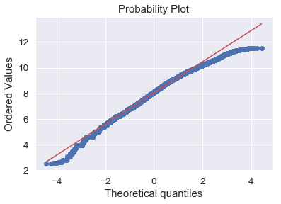
四.建立预测模型:
Y_train = df_train.price.values
del df_train['price']#将20%的样本划分为测试集，80%为训练集，即test_size=0.2
X_train, X_test, y_train, y_test = train_test_split(df_train, Y_train, test_size=0.2)(120000, 27)
(30000, 27)
model1 = Lasso()
model1.fit(X_train, y_train)
model2 = LinearRegression()
model2.fit(X_train, y_train)LinearRegression()#均方根误差（MSE）,因以对数据进行了对数变换，所以MSE值很小
y_pred1 = model1.predict(X_test)
y_pred2 = model2.predict(X_test)
print ("Lasso_model_MSE:", metrics.mean_squared_error(y_test, y_pred1))
print ("LinearRegression_model_MSE:", metrics.mean_squared_error(y_test, y_pred2))Lasso_model_MSE: 0.6224934337476821
LinearRegression_model_MSE: 0.0958617381596423
#交叉验证
predicted1 = cross_val_predict(model1, df_train, Y_train, cv=10)
predicted2 = cross_val_predict(model2, df_train, Y_train, cv=10)
print("Lasso_model_MSE:", metrics.mean_squared_error(Y_train, predicted1))
print("LinearRegression_model_MSE:", metrics.mean_squared_error(Y_train, predicted2))Lasso_model_MSE: 0.592128305557094
LinearRegression_model_MSE: 0.09487481770957773
#实际价格数据与预测数据作出对比
plt.scatter(Y_train, predicted1, color='y', marker='.',label='Lasso_model')
plt.scatter(Y_train, predicted2, color='g', marker='.',label='LinearRegression_model')
plt.scatter(Y_train, Y_train,color='r', marker='.',label='real_data')
plt.legend()
plt.show()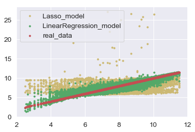
#通过上图，可以发现线性回归更加准确
rest = model2.predict(df_test)
result = np.expm1(rest)
print(result)#结果写入
df = pd.DataFrame([],index=None,columns=['ID','predicted_Price'])
df['ID'] = test_ID
df['predicted_Price'] = result
df.to_csv('data/result.csv')import pandas as pd
import numpy as np
import matplotlib.pyplot as plt
import seaborn as sns
from scipy.stats import norm
from scipy import stats
import datetime
import random
import warnings
warnings.filterwarnings('ignore')
plt.rcParams['font.sans-serif'] = ['SimHei']
plt.rcParams['axes.unicode_minus'] = False
import matplotlib.pyplot as plt
%matplotlib inline先随机生成一些数
lower, upper = 0, 100
mu1, sigma1 = 90, 10
mu2, sigma2 = 85, 10
X1 = stats.truncnorm(
(lower - mu1) / sigma1, (upper - mu1) / sigma1, loc=mu1, scale=sigma1)#有区间限制的随机数
X2 = stats.truncnorm(
(lower - mu2) / sigma2, (upper - mu2) / sigma2, loc=mu2, scale=sigma2)#有区间限制的随机数
x1 = X1.rvs(1000)
x2 = X2.rvs(1000)
y = np.zeros(1000)
for i in range(len(x1)):
if(0.4*x1[i]+0.6*x2[i])+random.randint(0,5)>92:
y[i] = 1
if x2[i]>98 or x1[i]>98:
y[i] = 1
if x2[i]<60 or x1[i]<60:
y[i] = 0
X = []
c = zip(x1,x2)
X = np.array(list(c))
X[:,1] = ((X[:,1] - np.min(X[:,1])) / (np.max(X[:,1]) - np.min(X[:,1])))
pdData = pd.DataFrame(X,columns=['x1','x2'])
pdData.insert(len(X[0]),'Y',y)pdData.shape(1000, 3)positive = pdData[pdData['Y'] == 1]
negative = pdData[pdData['Y'] == 0]
fig, ax = plt.subplots(figsize=(10,5))
ax.scatter(positive['x1'], positive['x2'], s=30, c='b', marker='o', label='获得优秀')
ax.scatter(negative['x1'], negative['x2'], s=30, c='r', marker='x', label='为获得优秀')
ax.legend()
ax.set_xlabel('平时成绩')
ax.set_ylabel('期末成绩')Text(0, 0.5, '期末成绩')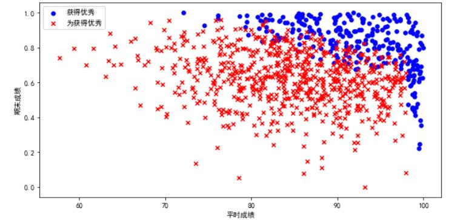
pdData.insert(0, 'Ones', 1)
orig_data = pdData.as_matrix()
cols = orig_data.shape[1]
X = orig_data[:,0:cols-1]
y = orig_data[:,cols-1:cols]
theta = np.zeros([1, 3])X.shape, y.shape, theta.shape((1000, 3), (1000, 1), (1, 3))from sklearn import preprocessing as pp
scaled_data = orig_data.copy()
scaled_data[:,1:3] = pp.scale(orig_data[:,1:3])建立logistic分类器（因为有两维特征，所以目标求解出三个参数 $\theta_0 \theta_1 \theta_2 $）
sigmoid : 映射到概率的函数
model : 返回预测结果
predict: 预测结果（根据阈值判断）
loss : 计算损失
reset: 打乱数据
gradient : 计算梯度
descent : 参数更新
accuracy: 计算精度并绘制confusion matrix图
sigmoid 函数$$ g(z) = \frac{1}{1+e^{-z}} $$
def sigmoid(z):
return 1 / (1 + np.exp(-z))$$ \begin{array}{ccc} \begin{pmatrix}\theta_{0} & \theta_{1} & \theta_{2}\end{pmatrix} & \times & \begin{pmatrix}1\\ x_{1}\\ x_{2} \end{pmatrix}\end{array}=\theta_{0}+\theta_{1}x_{1}+\theta_{2}x_{2} $$
def model(X, theta):
return sigmoid(np.dot(X, theta.T))将对数似然函数去负号
D(hθ(x), y) = − ylog (hθ(x)) − (1 − y)log (1 − hθ(x)) 求平均损失 $$ J(\theta)=\frac{1}{n}\sum_{i=1}^{n} D(h_\theta(x_i), y_i) $$
def loss(X, y, theta):
d1 = np.multiply(-y, np.log(model(X, theta)))
d2 = np.multiply(1 - y, np.log(1 - model(X, theta)))
return np.sum(d1 - d2) / (len(X))$$ \frac{\partial J}{\partial \theta_j}=-\frac{1}{m}\sum_{i=1}^n (y_i - h_\theta (x_i))x_{ij} $$
def gradient(X, y, theta):
grad = np.zeros(theta.shape)
err = (model(X, theta)- y).ravel()
for j in range(len(theta.ravel())):
ej = np.multiply(err, X[:,j])
grad[0, j] = np.sum(ej) / len(X)
return graddef reset(data):
np.random.shuffle(data)
cols = data.shape[1]
X = data[:, 0:cols-1]
y = data[:, cols-1:]
return X, yimport time
def descent(data, theta, N,batchSize, alpha):
i = 0 # 迭代次数
k = 0
X, y = reset(data)
grad = np.zeros(theta.shape) # 梯度
losss = [loss(X, y, theta)] # 损失
n = len(data[:,1])
while True:
grad = gradient(X[k:k+batchSize], y[k:k+batchSize], theta)
k += batchSize
if k >= n:
k = 0
X, y = reset(data)
theta = theta - alpha*grad # 参数更新
losss.append(loss(X, y, theta)) # 计算新的损失
i += 1
if i>N: break
return theta, i-1, losss, graddef drawpic(data,theta, N,batchSize, alpha):
n = len(data[:,1])
theta, iter, costs, grad = descent(data, theta, N,batchSize, alpha)
if batchSize==n: strDescType = "批量" + ' alpha is {}'.format(alpha) + ' loss is {}'.format(costs[-1])
elif batchSize==1: strDescType = "随机梯度" + ' alpha is {}'.format(alpha) + ' loss is {}'.format(costs[-1])
else: strDescType = "小批量 ({})".format(batchSize) + ' alpha is {}'.format(alpha) +' loss is {}'.format(costs[-1])
fig, ax = plt.subplots(figsize=(12,4))
ax.plot(np.arange(len(costs)), costs, 'r')
ax.set_xlabel('次数')
ax.set_ylabel('损失')
ax.set_title(strDescType)
return thetadrawpic(scaled_data,np.array([[0,0,0]]),10000,1,1)
drawpic(scaled_data,np.array([[0,0,0]]),10000,1,0.1)
drawpic(scaled_data,np.array([[0,0,0]]),10000,1,0.01)
drawpic(scaled_data,np.array([[0,0,0]]),10000,1,0.001)array([[-0.90882123, 0.88131039, 1.20955307]])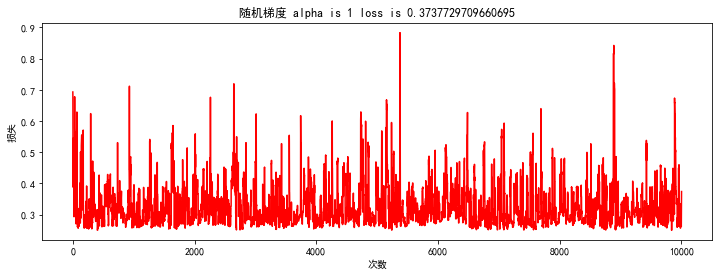
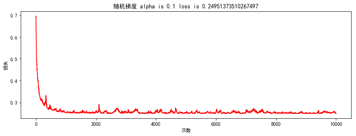
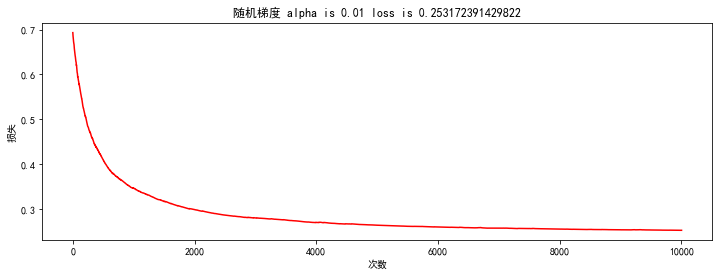
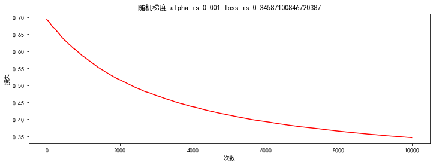
theta = drawpic(scaled_data,np.array([[0,0,0]]),100,1,0.1)
theta = drawpic(scaled_data,np.array([[0,0,0]]),1000,1,0.1)
theta = drawpic(scaled_data,np.array([[0,0,0]]),10000,1,0.1)
theta = drawpic(scaled_data,np.array([[0,0,0]]),100000,1,0.1)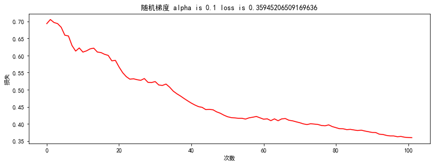
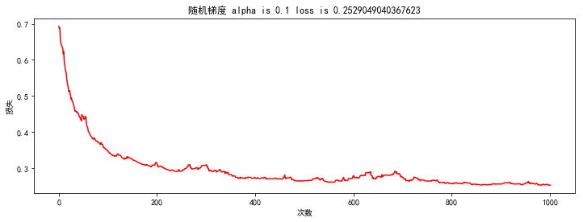
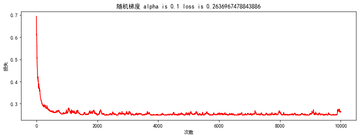
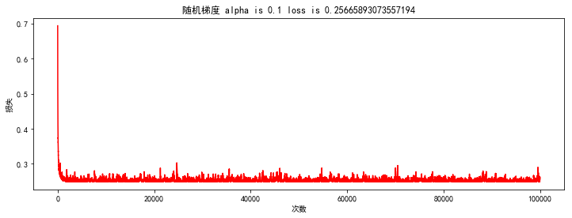
theta = drawpic(scaled_data,np.array([[0,0,0]]),10000,1,0.1)
theta = drawpic(scaled_data,np.array([[0,0,0]]),10000,10,0.1)
theta = drawpic(scaled_data,np.array([[0,0,0]]),10000,100,0.1)
theta = drawpic(scaled_data,np.array([[0,0,0]]),10000,500,0.1)
theta = drawpic(scaled_data,np.array([[0,0,0]]),10000,1000,0.1)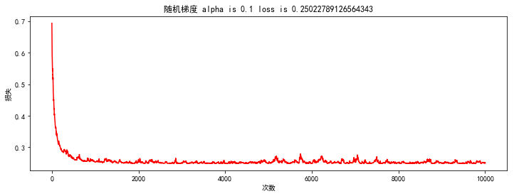
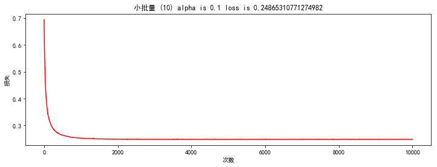
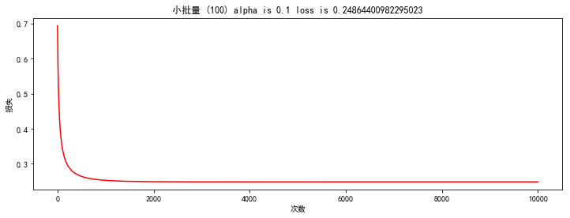
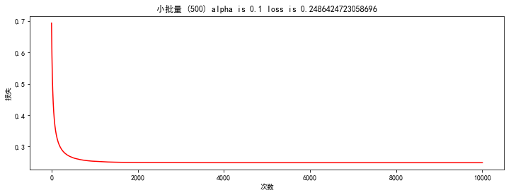
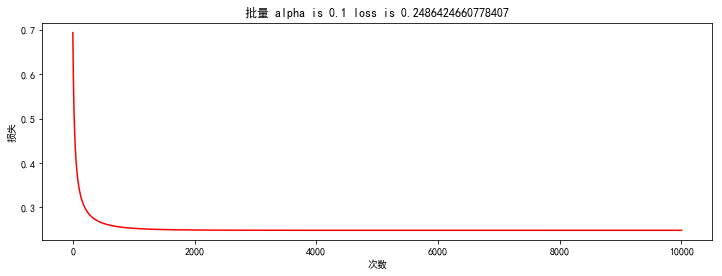
def predict(X, theta):
return [1 if x >= 0.5 else 0 for x in model(X, theta)]scaled_X = scaled_data[:, :3]
y = scaled_data[:, 3]
predictions = predict(scaled_X, theta)
correct = [1 if ((a == 1 and b == 1) or (a == 0 and b == 0)) else 0 for (a, b) in zip(predictions, y)]
accuracy = (sum(map(int, correct)) / len(correct))
print ('accuracy = {0}%'.format(accuracy*100))accuracy = 90.4%
from sklearn.metrics import confusion_matrix
import matplotlib.pyplot as plt
r1 = confusion_matrix(y, predictions)
guess = ["1","0"]
fact = [ "1","0"]
classes = list(set(fact))
# classes.sort(reverse=True)
plt.figure(figsize=(12,10)) #设置plt窗口的大小
confusion =r1
print("confusion",confusion)
plt.imshow(confusion, cmap=plt.cm.Blues)
indices = range(len(confusion))
indices2 = range(3)
plt.xticks(indices, classes,rotation=40,fontsize=18)
plt.yticks([0.00,1.00], classes,fontsize=18)
plt.ylim(1.5 , -0.5) #设置y的纵坐标的上下限
plt.title("Confusion matrix",fontdict={'weight':'1','size': 18})
#设置color bar的标签大小
cb=plt.colorbar()
cb.ax.tick_params(labelsize=18)
plt.xlabel('Predict label',fontsize=18)
plt.ylabel('True label',fontsize=18)
print("len(confusion)",len(confusion))
for first_index in range(len(confusion)):
for second_index in range(len(confusion[first_index])):
if confusion[first_index][second_index]>200:
color="w"
else:
color="black"
plt.text(first_index, second_index, confusion[first_index][second_index],fontsize=18, color = color,verticalalignment='center',horizontalalignment='center',)
plt.show()
confusion [[657 41]
[ 55 247]]
len(confusion) 2
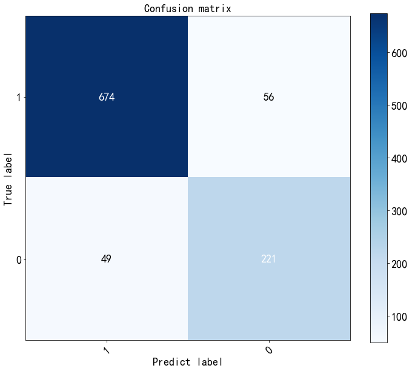